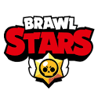

Brawl Stars es un popular videojuego de acción y estrategia desarrollado por Supercell, la misma compañía detrás de Clash of Clans y Clash Royale. El juego fue lanzado en 2018 y se ha convertido en uno de los títulos móviles más exitosos. Aquí están los aspectos más importantes: Género del juego: Brawl Stars es un juego de disparos multijugador en tiempo real que se juega en formato de partidas cortas y competitivas. Personajes (Brawlers): Los jugadores eligen entre una variedad de personajes jugables llamados "Brawlers", cada uno con habilidades y ataques únicos. Los Brawlers se dividen en diferentes clases, como tiradores, tanques, asesinos y apoyo. Modos de juego: Brawl Stars ofrece varios modos de juego, como Gem Grab, Showdown, Brawl Ball, Bounty, Heist, Siege, y más. Cada modo de juego tiene sus propias reglas y objetivos. Equipos y Competencia: Los jugadores pueden formar equipos con amigos o ser emparejados con otros jugadores en partidas en línea. La cooperación y la estrategia son fundamentales para ganar partidas. Eventos y Actualizaciones: Supercell regularmente introduce eventos especiales y actualizaciones que agregan nuevos Brawlers, modos de juego y contenido, manteniendo el juego fresco y emocionante. Moneda del juego: Hay varias monedas y elementos en el juego, como gemas, fichas y cajas, que los jugadores pueden ganar y usar para desbloquear nuevos Brawlers y personalizar sus personajes. Gráficos y Estilo Visual: Brawl Stars presenta un estilo visual colorido y atractivo que atrae a jugadores de todas las edades. Plataformas: El juego está disponible para dispositivos móviles, incluyendo iOS y Android, lo que lo hace accesible para una amplia audiencia. Comunidad y Competencia: Brawl Stars ha desarrollado una activa comunidad de jugadores y competiciones de esports, lo que ha contribuido a su éxito y longevidad.
